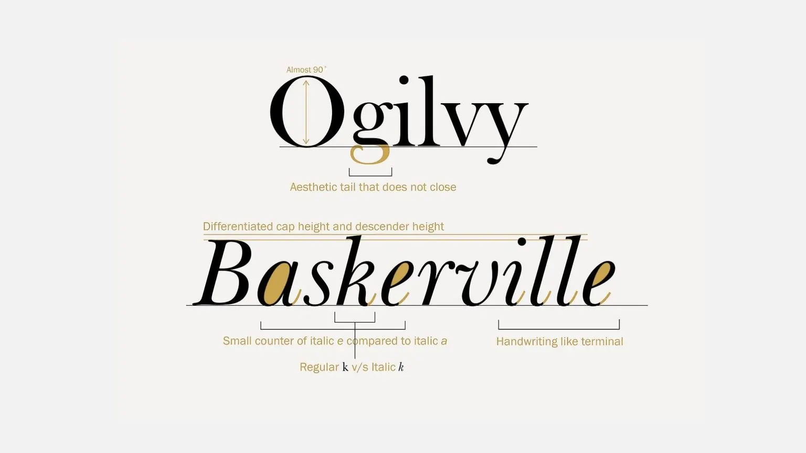
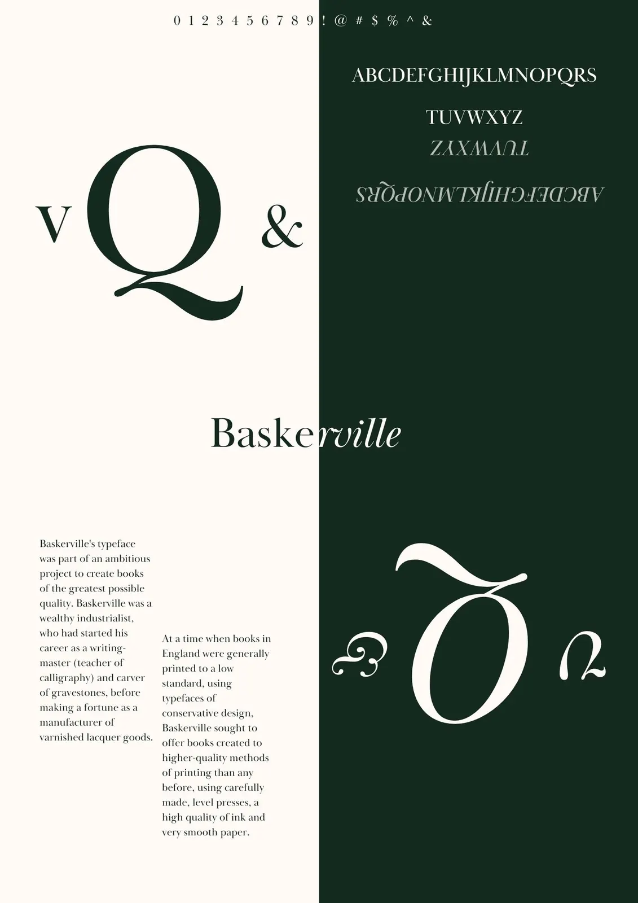
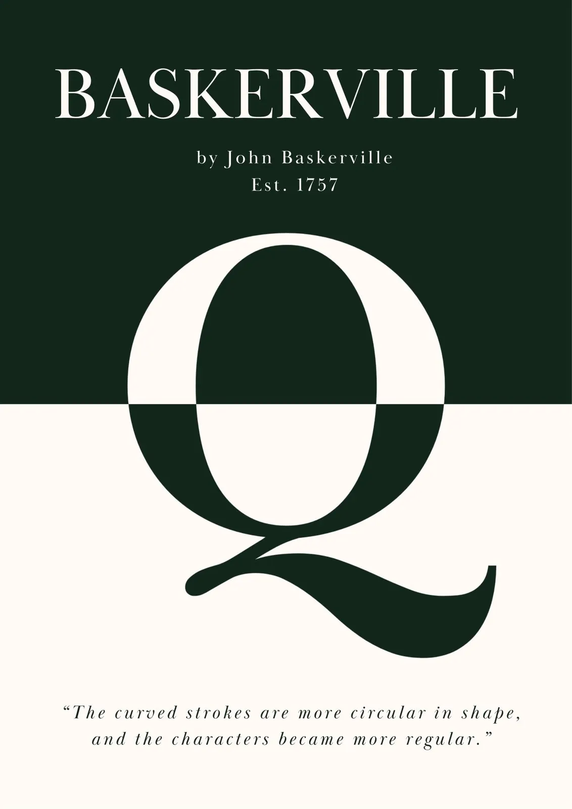
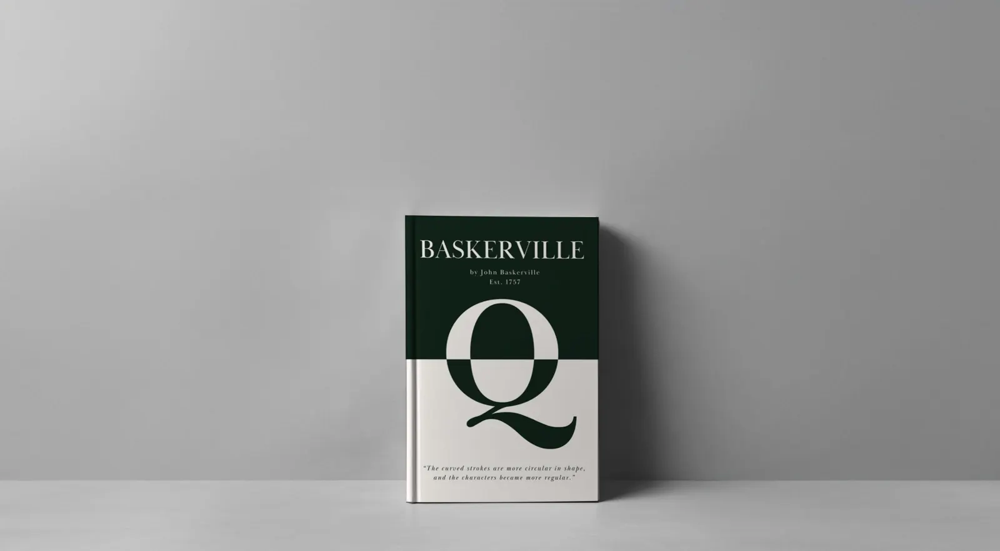

01
Study
Baskerville sits between Old Style and Modern serifs: higher contrast and sharper edges, compared letter by letter.

08
Typography study
Overview
Baskerville's structure and contrast studied, then set as a poster and a companion book cover.
BriefPresent Baskerville as both a functional and an aesthetically significant typeface in design history.
ApproachA study of its origins (John Baskerville, England, 1757) and its letterforms, then a poster and book cover that use its high contrast, sharp serifs and a two-colour palette.
2 steps
Baskerville sits between Old Style and Modern serifs: higher contrast and sharper edges, compared letter by letter.

High contrast and sharp serifs in a two-colour palette, then a companion book cover.


